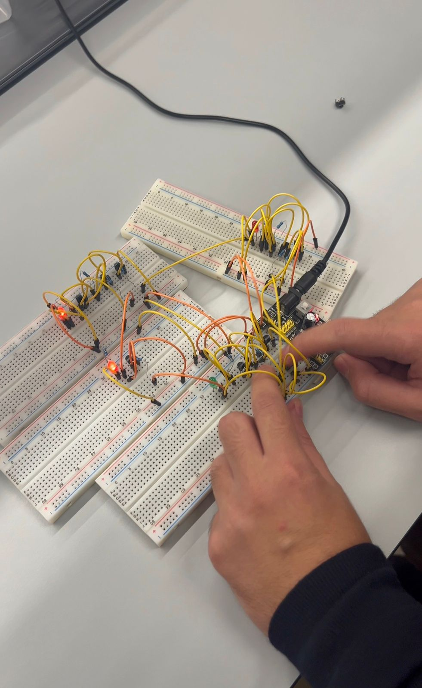

Project on Logic Gates: Understanding Hardware Fundamentals

This project details the fundamental construction of digital logic gates, such as AND, OR, and NOT, by utilizing discrete electronic components, primarily transistors and resistors, serving as a hands-on method to understand the core principles of digital electronics; specifically, we will configure transistors to act as electronically controlled switches—leveraging the cutoff and saturation regions—to practically realize the rules of Boolean Algebra, thereby stripping away the complexity of integrated circuits to demonstrate that all computer logic is built upon the simple switching action of these components, with each constructed gate's function being meticulously verified against its theoretical truth table.